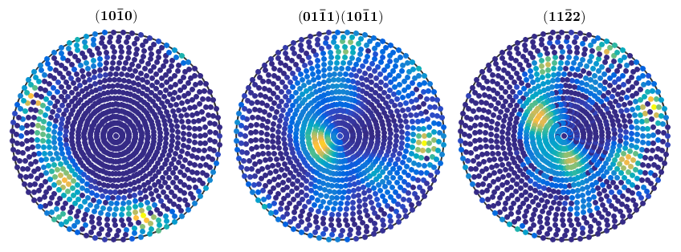
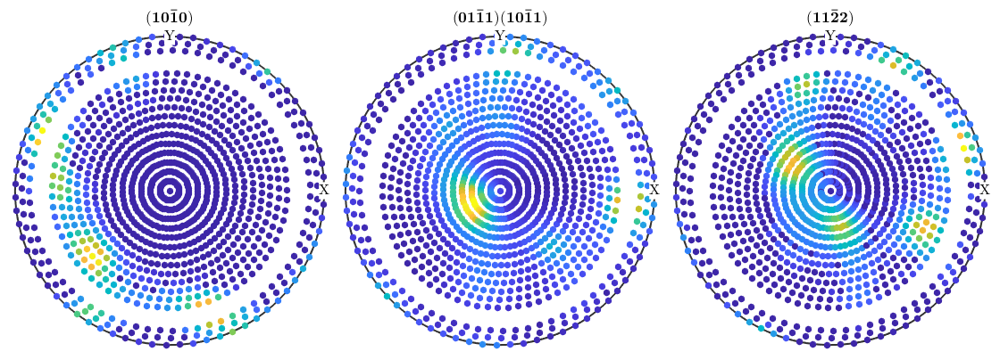
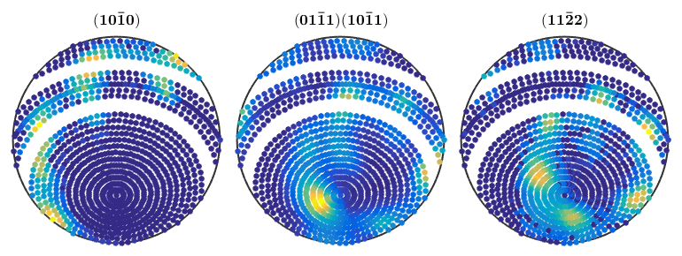
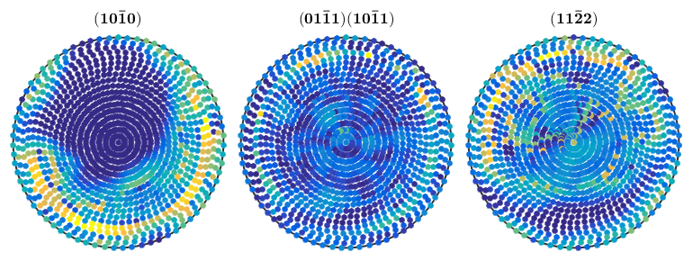
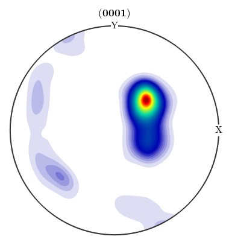
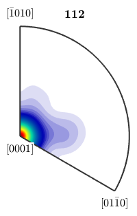
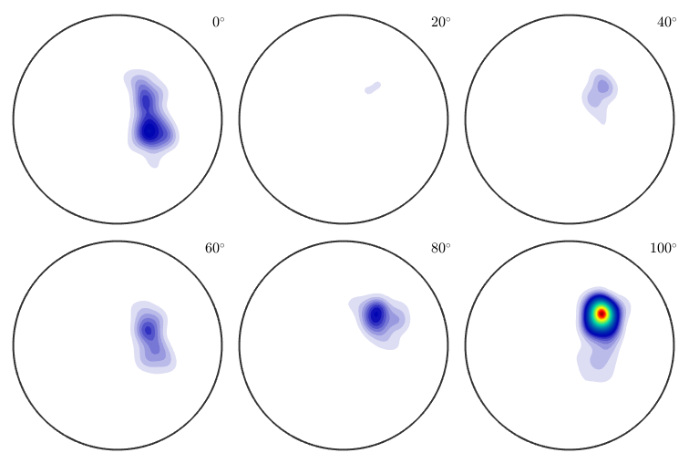
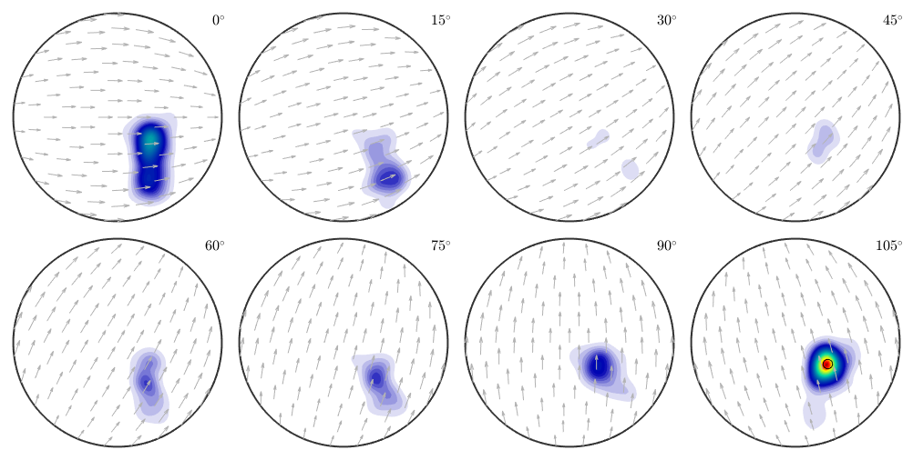

Detailed demonstration of the MTEX toolbox at the Dubna data example.
The data where meassured by Florian Wobbe at Dubna 2005 of a Quarz specimen using Neutron diffraction.
% specify scrystal and specimen symmetry cs = crystalSymmetry('-3m',[1.4,1.4,1.5]); % specify file names fname = {... fullfile(mtexDataPath,'PoleFigure','dubna', 'Q(10-10)_amp.cnv'),... fullfile(mtexDataPath,'PoleFigure','dubna','Q(10-11)(01-11)_amp.cnv'),... fullfile(mtexDataPath,'PoleFigure','dubna','Q(11-22)_amp.cnv')}; % specify crystal directions h = {Miller(1,0,-1,0,cs),[Miller(0,1,-1,1,cs),Miller(1,0,-1,1,cs)],Miller(1,1,-2,2,cs)}; % specify structure coefficients c = {1,[0.52 ,1.23],1}; % import pole figure data pf = loadPoleFigure(fname,h,cs,'superposition',c)
pf = PoleFigure crystal symmetry : -3m1, X||a*, Y||b, Z||c* specimen symmetry: 1 h = (10-10), r = 72 x 19 points h = (01-11)(10-11), r = 72 x 19 points h = (11-22), r = 72 x 19 points
plot(pf)
pf_corrected = pf(pf.r.theta < 70*degree | pf.r.theta > 75*degree); plot(pf_corrected)
pf_rotated = rotate(pf_corrected,axis2quat(xvector,45*degree));
plot(pf_rotated,'antipodal') We use here the option 'background' to specify the approximative background radiation and to increase the accuracy of the reconstruction. Furthermore, we have seen from the pole figures that the ODF is quit sharp and hence using the zero range method reduces the computational time.
odf = calcODF(pf_corrected,'background',10,'zero_range')
odf = ODF
crystal symmetry : -3m1, X||a*, Y||b, Z||c*
specimen symmetry: 1
Radially symmetric portion:
kernel: de la Vallee Poussin, halfwidth 5°
center: 19826 orientations, resolution: 5°
weight: 1
% calc RP1 error calcError(pf_corrected,odf,'RP',1) % difference plot plotDiff(pf,odf) mtexColorbar
progress: 100%
ans =
0.5673 0.2651 0.3071
progress: 100%
 plotPDF(odf,Miller(0,0,1,cs),'antipodal') plotIPDF(odf,vector3d(1,1,2))
plot(odf,'sections',6,'silent','sigma')
progress: 100%
odfrotated = rotate(odf,axis2quat(xvector,45*degree)); plot(odfrotated,'sections',8,'sigma'); annotate(calcModes(odfrotated),'marker','o',... 'MarkerFaceColor','none','MarkerEdgeColor','k');
progress: 100% progress: 100%
volume(odf,calcModes(odf),20*degree)
progress: 100%
ans =
0.3355
| DocHelp 0.1 beta |